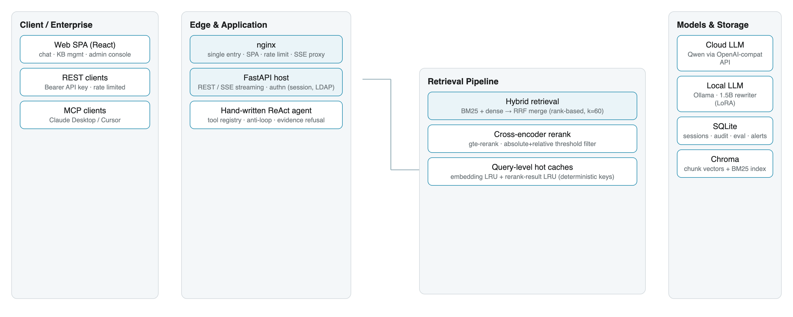

Retrieval-augmented generation (RAG) systems are usually demonstrated rather than measured: prototypes are wired to a vector store and a prompt, but provide no answer to how much a design change helps, which queries are silently dropped, or what a system costs to run. This report describes DocMind, a self-hosted multi-assistant RAG platform built around three engineering commitments: retrieval quality is measured (a fixed 47-question benchmark gates every change), cost and latency are engineered (a four-layer determinism-keyed cache hierarchy lifts warm throughput from 3.1 to 801 QPS), and fine-tuning is applied narrowly (a rank-8 LoRA adapter on a 1.5B model improves overall Recall@4 by 3.97 points at zero marginal API cost).
DocMind 是一个自托管的企业级多助手 RAG 平台（不依赖 LangChain / LlamaIndex，ReAct Agent 与平台能力全部自研）。 这份技术报告回答一个朴素的问题：如何把一个 RAG 演示变成一个可运营的 RAG 系统。
报告给出三条主线，每一条都带可复现数字：① 检索质量可测量——固定 47 题基准（30 常规 + 17 对抗性口语）作为每次改动的门禁， 混合检索（BM25 + 稠密向量经 RRF 融合）把对抗集 Recall@4 从 94.1% 提到 100.0%，交叉编码器精排让 MRR 提升 7.8%， 并显式论证了阈值带来的召回换拒答安全；② 成本与延迟是设计出来的——按「确定性」组织的四层缓存 （分词 / 文档向量 / 查询向量 / 精排结果）让热点重放负载吞吐从 3.1 QPS 提升到 801 QPS、P95 从 2,573 ms 降到 11 ms， 冷查询零回退；③ 微调只做窄任务——rank-8 LoRA 改写器（Qwen2.5-1.5B）让总体 Recall@4 +3.97 个百分点， 并通过归因实验证明剩余瓶颈在语料覆盖而非改写质量。
A single nginx process serves the React SPA and reverse-proxies REST / SSE traffic to a FastAPI host; the whole stack ships as one docker-compose project behind ports 80/443. The agent core is a hand-written ReAct loop — no agent framework — with an evidence-grounded refusal path. Every enhancement (reranker, caches, web search) degrades gracefully; the answering path never depends on them succeeding.

| Route | Recall@4 (canon. / adv.) | MRR (canon. / adv.) |
|---|---|---|
| Dense only | 100.0% / 94.1% | 0.978 / 0.843 |
| Hybrid + RRF | 100.0% / 100.0% | 1.000 / 0.873 |
| Hybrid + RRF + rerank | 100.0% / 94.1% | 1.000 / 0.941 |
Every number is produced by the benchmark script and is reproducible from the repository.
| Scenario | Baseline (QPS / P95) | With caches (QPS / P95) |
|---|---|---|
| Concurrency 1 — first pass, cold | 2.46 / 1,040 ms | 2.84 / 1,059 ms |
| Concurrency 4 — second pass, warm | 2.97 / 1,390 ms | 741 / 6 ms |
| Concurrency 8 — third pass, warm | 3.10 / 2,573 ms | 801 / 11 ms |
Identical 12-question set replayed at three concurrency levels; warm passes skip both upstream round-trips.
| Group (n) | Baseline rewrite | Tuned rewrite | Delta |
|---|---|---|---|
| Overall (126) | 0.754 | 0.794 | +3.97 pp |
| Canonical (81) | 0.827 | 0.889 | +6.17 pp |
| Adversarial (45) | 0.622 | 0.622 | 0.00 |
126 deterministic samples from a held-out noise-seed range; no evaluation string appears in the training corpus.
@techreport{yuxiuquan2026docmind,
title = {DocMind: A Self-Hosted Retrieval-Augmented Generation Platform with
Measurable Retrieval Quality, Deterministic Layered Caching, and
Operations-Grade Governance},
author = {Yuxiuquan},
institution = {Independent project},
type = {Technical report},
year = {2026},
month = {8},
doi = {10.5281/zenodo.TODO_PLACEHOLDER},
url = {https://github.com/Ice-Breaking/DocMind}
}